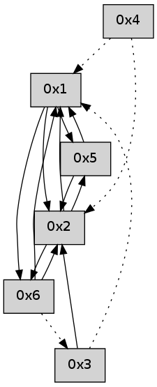

>> << IDX [start] -100 -25 -5 +0 +5 +25 +100 [470.11294198]
 Previous packets
----------------------------------------------------------------------
465.191854 beacon01(adaf) #0 coord=01,02,05,03,04,06 cycle=432.0ms assoc
-- color-indic=0 64 48 ff
465.201815 beacon02(adaf) #0 coord=01,02,05,03,04,06 cycle=432.0ms assoc 64 19 00
465.211815 beacon05(adaf) #0 coord=01,02,05,03,04,06 cycle=432.0ms assoc 64 bf 2a
465.221816 beacon03(adaf) #0 coord=01,02,05,03,04,06 cycle=432.0ms assoc 64 23 0e
465.231816 beacon04(adaf) #0 coord=01,02,05,03,04,06 cycle=432.0ms assoc 64 85 24
465.241816 beacon06(adaf) #0 coord=01,02,05,03,04,06 cycle=432.0ms assoc 64 f1 38
465.253477 [Hello(5): seq=225 sym=2,1 sysInfo= stat=2:0,0,0,0/1:8,0,0,0]
----------------------------------------------------------------------
465.683962 beacon01(adaf) #0 coord=01,02,05,03,04,06 cycle=432.0ms assoc
-- color-indic=0 64 04 4f
465.693922 beacon02(adaf) #0 coord=01,02,05,03,04,06 cycle=432.0ms assoc 64 55 b0
465.703922 beacon05(adaf) #0 coord=01,02,05,03,04,06 cycle=432.0ms assoc 64 f3 9a
465.713923 beacon03(adaf) #0 coord=01,02,05,03,04,06 cycle=432.0ms assoc 64 6f be
465.723924 beacon04(adaf) #0 coord=01,02,05,03,04,06 cycle=432.0ms assoc 64 c9 94
465.733924 beacon06(adaf) #0 coord=01,02,05,03,04,06 cycle=432.0ms assoc 64 bd 88
465.747877 [Hello(1): seq=163 sym=5,2,6 sysInfo= stat=5:1,0,0,0/2:1,0,0,0/6:7,0,0,0]
----------------------------------------------------------------------
466.176070 beacon01(adaf) #0 coord=01,02,05,03,04,06 cycle=432.0ms assoc
-- color-indic=0 64 c0 20
466.186031 beacon02(adaf) #0 coord=01,02,05,03,04,06 cycle=432.0ms assoc 64 91 df
466.196032 beacon05(adaf) #0 coord=01,02,05,03,04,06 cycle=432.0ms assoc 64 37 f5
466.206031 beacon03(adaf) #0 coord=01,02,05,03,04,06 cycle=432.0ms assoc 64 ab d1
466.216031 beacon04(adaf) #0 coord=01,02,05,03,04,06 cycle=432.0ms assoc 64 0d fb
466.226032 beacon06(adaf) #0 coord=01,02,05,03,04,06 cycle=432.0ms assoc 64 79 e7
466.237689 [Hello(5): seq=226 sym=2,1 sysInfo= stat=2:1,0,0,0/1:9,0,0,0]
----------------------------------------------------------------------
466.668179 beacon01(adaf) #0 coord=01,02,05,03,04,06 cycle=432.0ms assoc
-- color-indic=0 64 b8 8d
466.678139 beacon02(adaf) #0 coord=01,02,05,03,04,06 cycle=432.0ms assoc 64 e9 72
466.688140 beacon05(adaf) #0 coord=01,02,05,03,04,06 cycle=432.0ms assoc 64 4f 58
466.698140 beacon03(adaf) #0 coord=01,02,05,03,04,06 cycle=432.0ms assoc 64 d3 7c
466.708141 beacon04(adaf) #0 coord=01,02,05,03,04,06 cycle=432.0ms assoc 64 75 56
466.718140 beacon06(adaf) #0 coord=01,02,05,03,04,06 cycle=432.0ms assoc 64 01 4a
466.736115 [Hello(1): seq=164 sym=5,2,6 sysInfo= stat=5:2,0,0,0/2:1,0,0,0/6:7,0,0,0]
----------------------------------------------------------------------
467.160286 beacon01(adaf) #0 coord=01,02,05,03,04,06 cycle=432.0ms assoc
-- color-indic=0 64 7c e2
467.170248 beacon02(adaf) #0 coord=01,02,05,03,04,06 cycle=432.0ms assoc 64 2d 1d
467.180247 beacon05(adaf) #0 coord=01,02,05,03,04,06 cycle=432.0ms assoc 64 8b 37
467.190246 beacon03(adaf) #0 coord=01,02,05,03,04,06 cycle=432.0ms assoc 64 17 13
467.200247 beacon04(adaf) #0 coord=01,02,05,03,04,06 cycle=432.0ms assoc 64 b1 39
467.210248 beacon06(adaf) #0 coord=01,02,05,03,04,06 cycle=432.0ms assoc 64 c5 25
467.221911 [Hello(5): seq=227 sym=2,1 sysInfo= stat=2:2,0,0,0/1:10,0,0,0]
----------------------------------------------------------------------
467.652395 beacon01(adaf) #0 coord=01,02,05,03,04,06 cycle=432.0ms assoc
-- color-indic=0 64 30 52
467.662357 beacon02(adaf) #0 coord=01,02,05,03,04,06 cycle=432.0ms assoc 64 61 ad
467.672359 beacon05(adaf) #0 coord=01,02,05,03,04,06 cycle=432.0ms assoc 64 c7 87
467.682356 beacon03(adaf) #0 coord=01,02,05,03,04,06 cycle=432.0ms assoc 64 5b a3
467.692357 beacon04(adaf) #0 coord=01,02,05,03,04,06 cycle=432.0ms assoc 64 fd 89
467.702358 beacon06(adaf) #0 coord=01,02,05,03,04,06 cycle=432.0ms assoc 64 89 95
467.717445 [Hello(1): seq=165 sym=5,2,6 sysInfo= stat=5:3,0,0,0/2:1,0,0,0/6:7,0,0,0]
----------------------------------------------------------------------
468.144505 beacon01(adaf) #0 coord=01,02,05,03,04,06 cycle=432.0ms assoc
-- color-indic=0 64 f4 3d
468.154466 beacon02(adaf) #0 coord=01,02,05,03,04,06 cycle=432.0ms assoc 64 a5 c2
468.164468 beacon05(adaf) #0 coord=01,02,05,03,04,06 cycle=432.0ms assoc 64 03 e8
468.174467 beacon03(adaf) #0 coord=01,02,05,03,04,06 cycle=432.0ms assoc 64 9f cc
468.184467 beacon04(adaf) #0 coord=01,02,05,03,04,06 cycle=432.0ms assoc 64 39 e6
468.194467 beacon06(adaf) #0 coord=01,02,05,03,04,06 cycle=432.0ms assoc 64 4d fa
468.206114 [Hello(5): seq=228 sym=2,1 sysInfo= stat=2:3,0,0,0/1:11,0,0,0]
----------------------------------------------------------------------
468.636614 beacon01(adaf) #0 coord=01,02,05,03,04,06 cycle=432.0ms assoc
-- color-indic=0 64 b9 3a
468.646576 beacon02(adaf) #0 coord=01,02,05,03,04,06 cycle=432.0ms assoc 64 e8 c5
468.656576 beacon05(adaf) #0 coord=01,02,05,03,04,06 cycle=432.0ms assoc 64 4e ef
468.666577 beacon03(adaf) #0 coord=01,02,05,03,04,06 cycle=432.0ms assoc 64 d2 cb
468.676576 beacon04(adaf) #0 coord=01,02,05,03,04,06 cycle=432.0ms assoc 64 74 e1
468.686577 beacon06(adaf) #0 coord=01,02,05,03,04,06 cycle=432.0ms assoc 64 00 fd
468.698237 [Hello(4): seq=267 asym=2,1 sysInfo= stat=2:0,0,0,0/1:5,0,0,0]
468.700339 [Hello(1): seq=166 sym=5,2,6 sysInfo= stat=5:4,0,0,0/2:1,0,0,0/6:7,0,0,0]
----------------------------------------------------------------------
469.128724 beacon01(adaf) #0 coord=01,02,05,03,04,06 cycle=432.0ms assoc
-- color-indic=0 64 7d 55
469.138685 beacon02(adaf) #0 coord=01,02,05,03,04,06 cycle=432.0ms assoc 64 2c aa
469.148685 beacon05(adaf) #0 coord=01,02,05,03,04,06 cycle=432.0ms assoc 64 8a 80
469.158685 beacon03(adaf) #0 coord=01,02,05,03,04,06 cycle=432.0ms assoc 64 16 a4
469.168686 beacon04(adaf) #0 coord=01,02,05,03,04,06 cycle=432.0ms assoc 64 b0 8e
469.178685 beacon06(adaf) #0 coord=01,02,05,03,04,06 cycle=432.0ms assoc 64 c4 92
469.190340 [Hello(5): seq=229 sym=2,1 sysInfo= stat=2:4,0,0,0/1:12,0,0,0]
----------------------------------------------------------------------
469.620834 beacon01(adaf) #0 coord=01,02,05,03,04,06 cycle=432.0ms assoc
-- color-indic=0 64 31 e5
469.630794 beacon02(adaf) #0 coord=01,02,05,03,04,06 cycle=432.0ms assoc 64 60 1a
469.640794 beacon05(adaf) #0 coord=01,02,05,03,04,06 cycle=432.0ms assoc 64 c6 30
469.660795 beacon04(adaf) #0 coord=01,02,05,03,04,06 cycle=432.0ms assoc 64 fc 3e
469.670796 beacon06(adaf) #0 coord=01,02,05,03,04,06 cycle=432.0ms assoc 64 88 22
469.682218 [Hello(1): seq=167 sym=5,2,6 sysInfo= stat=5:5,0,0,0/2:1,0,0,0/6:7,0,0,0]
469.686096 [Hello(4): seq=268 asym=2,1 sysInfo= stat=2:0,0,0,0/1:6,0,0,0]